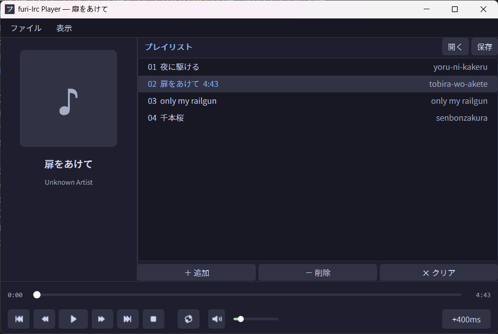
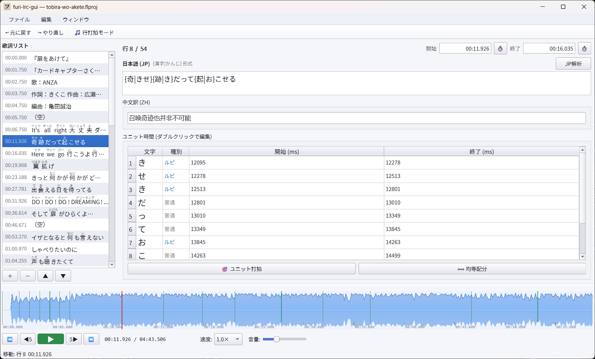
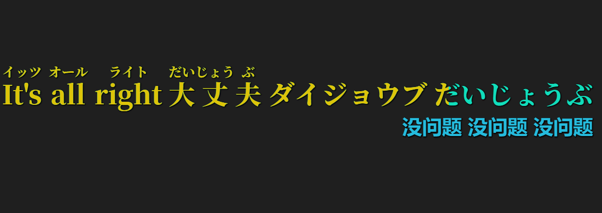
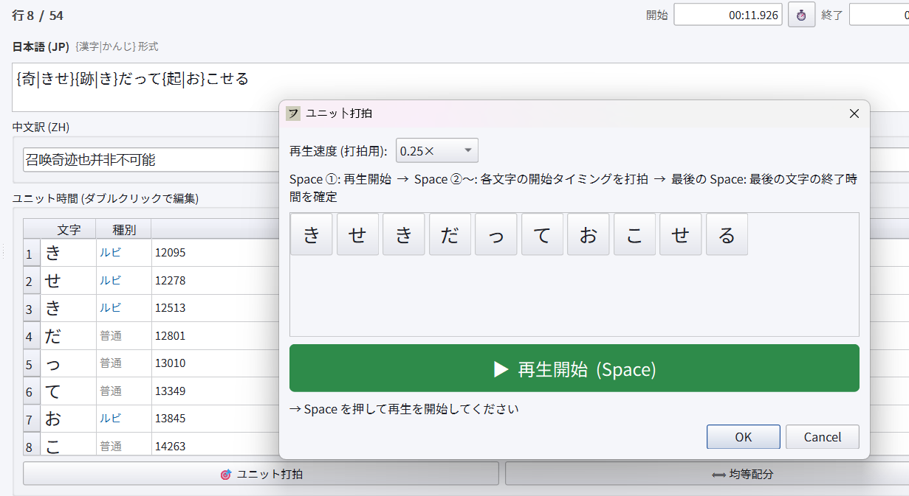
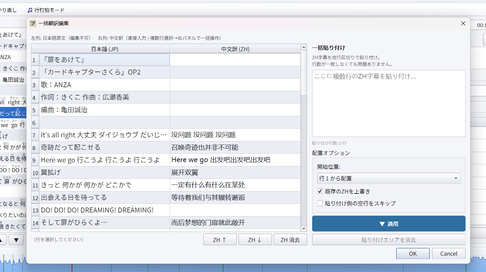

FURI-LRC GUI
制作 .flproj 工程和 .flrc 歌词，支持导入标准 LRC、编辑日文原文、假名注音、中文翻译与逐单位时间。
一个项目，两类工具
制作 .flproj 工程和 .flrc 歌词，支持导入标准 LRC、编辑日文原文、假名注音、中文翻译与逐单位时间。
管理播放列表、读取音频标签与封面，播放时自动匹配歌词，并把进度直接传给桌面歌词窗。
置顶、可拖拽、可锁定、可穿透点击。歌词使用本地字体绘制，支持假名、日文、中文三层排版和扫色高亮。
Player
播放器以 Qt Multimedia 驱动本地音频，避免依赖系统媒体会话即可获得稳定的毫秒级进度。播放时会打开并同步桌面歌词窗，适合日语听歌、跟唱和歌词校对。
.flpl，可拖入音频或播放列表文件。.flrc 歌词。
GUI
编辑器把音频波形、歌词行列表、单行日文/中文编辑和时间单位表放在同一个窗口中。你可以先导入普通 LRC，再逐步补全假名、翻译和更细粒度的时间。
{漢字|かな} 标记写入假名注音，并继续编辑每个单位的起止时间。.lrc 或 FURI-LRC 专用 .flrc，工程状态保存为 .flproj。
Workflow
打开歌曲文件，导入已有 LRC 作为行级时间轴，先得到可编辑的歌词骨架。
在日文文本中加入 {base|reading}，维护中文翻译，保存为 .flproj 继续迭代。
结合波形、快捷键和单位打拍，把假名单位的起止时间调整到演唱节奏。
导出 .flrc，用 Player 播放歌曲，透明悬浮窗会同步显示逐假名高亮。
Screenshots
FURI-LRC GUI 编辑器、播放器和桌面悬浮歌词窗的截图。



Formats
FURI-LRC 把“可继续编辑的工程”和“可播放显示的歌词”分开保存，既方便校对，也方便把最终歌词和播放器一起分发。
.flproj编辑器工程：音频路径、歌词、窗口状态、波形缩放等。.flrc播放器歌词：日文片段、假名单位、时间轴和中文翻译。.flpl播放器列表：歌曲路径、绑定歌词、偏移量和循环模式。.lrc通用歌词：可导入作为起点，也可从编辑器导出。Quick Start
pip install -r requirements.txt
python furi-lrc-gui.py
python furi-lrc-player.py